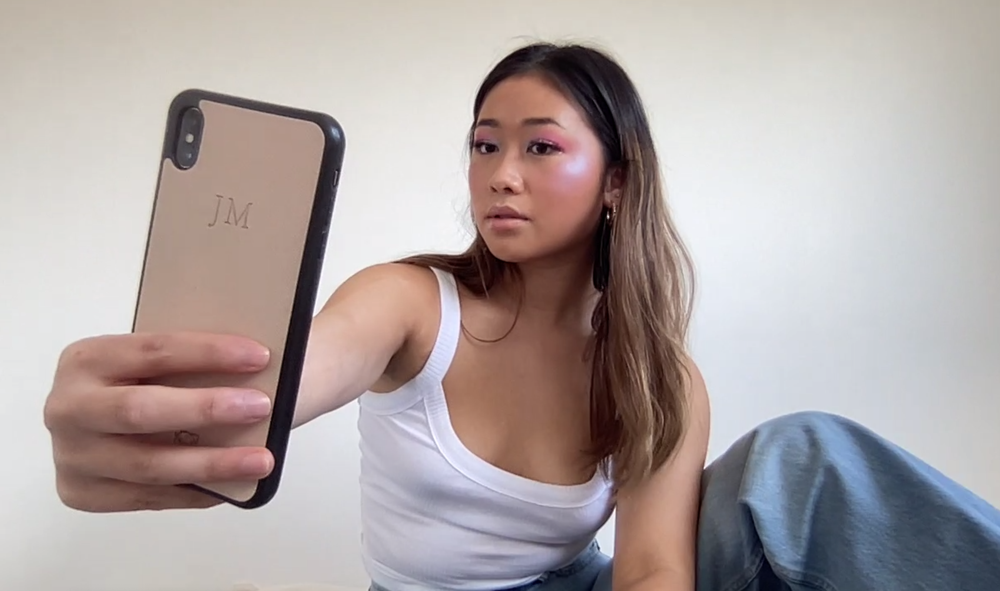

Small nose, chiseled face, slim waist. This is the image that has continuously been plastered across every billboard, published in every magazine, occupied our TVs and walked the runways. For so long, this image has been put on a pedestal, one that is inaccessible to most. It perpetuates a kind of beauty that further privileges white femininity, allowing an insidious form of racism to permeate throughout society today.
For years we have consumed Eurocentric Beauty, looking up to them as the default when in reality they are far from it.
Western standards are by no means the norm but society’s hyper fixation and reinforcement of such features have made many feel this to be true.
Curvy is attractive but you can’t be too curvy. We love a glowing ‘natural’ tan but an Indian person’s naturally tanned skin isn’t considered beautiful? Thick eyebrows or are they skinny now? It’s hard to keep up so who knows.
The damaging effects of Eurocentric beauty ideals run far, impacting upon people’s self-esteem, self-worth and sense of belonging from a very young age.
How many people of colour have gone through the
‘I wish I was white’ phase at least once in their life? I can almost confidently say that the thought has at least brushed past all of us.

When these standards are all that we see within mainstream media, it is inevitable that we think that the fault must lie within us. Of course, these Western features are the most desirable so our ethnic ones must be ‘ugly’, or at least that is what we have been told.
But it is time to decolonise beauty and take control of the narrative.
Create space for glowing melanin and ethnic noses. Create space for luscious frizzy hair and thick eyebrows because they have always been beautiful. There is no need to fit into Western notions of beauty that have lingered within society. There is no need to alter or change, because ethnic beauty is unique and not recognising that under an ignorance of the ‘typical’ is the problem that really needs to be addressed.
Dismantle the standard and own your skin, because our beauty is flawless.